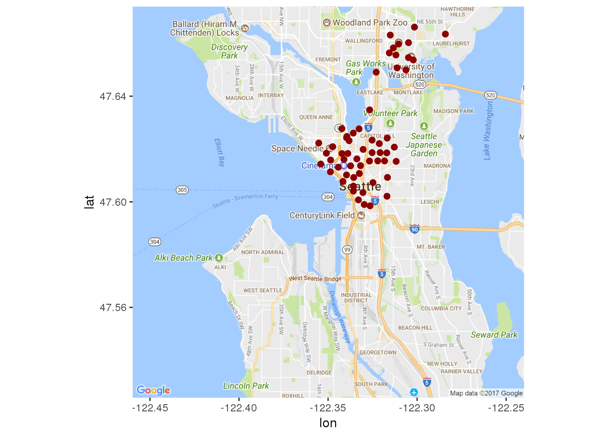

Seattle’s Bicycle Sharing Graphical Analysis
We find the orignal information here.
Introduction
This is a report and analysis on Seattle’s bicycle sharing trends. The data includes weather reports for the area (excluding summer logistics), the station locations, as well as trips taken by cycle riders. Future explorations of this type of data could include investigating more extensively overall public transportation data trends for this area. This would serve to establish a better understanding of public transportation trends. Interestingly enough this transportation company has since dissolved and the data points that were collected from this company are …
Station Locations
Lets take a look at where the rental stations are located in Seattle!
#For show (the graphs , THE EVI-DANCE) Formating the dates
station$install_date <- mdy(station$install_date)
# How many times were new stations installed?
station %>% summarise(n_distinct(install_date))## n_distinct(install_date)
## 1 9# How many stations were installed on each date
station %>% group_by(install_date) %>% summarise(count = n()) %>%
arrange(install_date)## # A tibble: 9 x 2
## install_date count
## <date> <int>
## 1 2014-10-13 50
## 2 2015-05-22 1
## 3 2015-06-12 1
## 4 2015-07-27 1
## 5 2015-09-15 1
## 6 2015-10-29 1
## 7 2016-03-18 1
## 8 2016-07-03 1
## 9 2016-08-09 1station %>% summarise(n_distinct(station_id))## n_distinct(station_id)
## 1 58station_locs <- station %>% group_by(station_id) %>% select(1:4, -2)
mymap <- get_map(location = c(lat = 47.60, lon = -122.35), maptype = "roadmap", zoom = 12)## note : locations should be specified in the lon/lat format, not lat/lon.## Map from URL : http://maps.googleapis.com/maps/api/staticmap?center=47.6,-122.35&zoom=12&size=640x640&scale=2&maptype=roadmap&language=en-EN&sensor=false# Plot a single point for each Station ID
ggmap(mymap) + geom_point(aes(x = long, y = lat), data = station_locs,
alpha = 1, color = "darkred", size = 2)
Stations Locations Data

Stations map Zoomed In
Look at all those stations! Its hard to believe they managed to go out of business!
Histogram of Number of Bikes per Station
Current Dock Count
Change in Number of Bike Docks Per Station

11 stations lost bike docks, 39 docks stayed the same, 8 stations gained docks.

Time to visualize the number of rides per day
Plotting trips per month (by season; excluding summer)
## [1] "trip_id" "starttime" "stoptime"
## [4] "bikeid" "tripduration" "from_station_name"
## [7] "to_station_name" "from_station_id" "to_station_id"
## [10] "usertype" "gender" "birthyear"
## [13] "start_dt" "stop_dt" "start_date"
## [16] "stop_date" "ym" "Season"
Trips Per Month (By Season)
Convert Trip Duration from Seconds to Minutes

Average Trip Duration